羁绊配队操作说明书
从选择区服、导入账号，到选关卡、看推荐、编辑队伍和导出方案，一步步得到当前条件下的最高羁绊配队。
下载 PDF 版本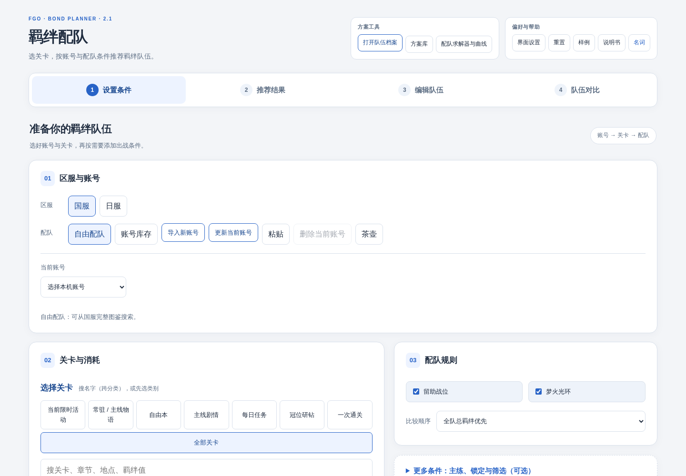
这份说明书按实际界面顺序编写。第一次使用可以照着“快速开始”走一遍；熟悉之后，直接查对应章节即可。
01快速开始
一次完整配队只需要五步。
先点右上角“样例”填入一套演示条件，再点“开始推荐羁绊队伍”。看完结果后点“重置”，换成自己的账号和关卡。
02界面总览
页面从上到下分成三段：顶部工具栏、四个工作页签、以及 01 区服与账号、02 关卡与消耗、03 配队规则三块条件区。
03区服与账号
先确认右上角的区服。国服与日服使用各自的从者、礼装、活动、关卡和预计算数据，切服会清空当前队伍与关卡，并恢复该区服保存的账号和偏好。
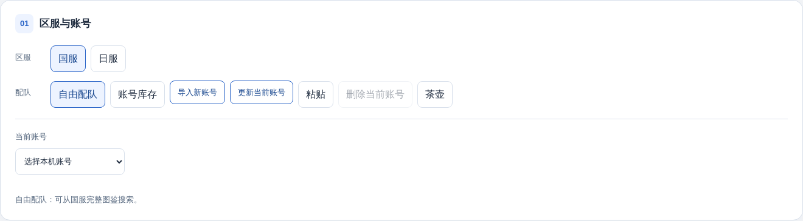
自由配队与账号库存
导入账号
支持 Chaldea 的 userdata.json，也支持抓包保存的 login.php / toplogin 回包。把文件拖进页面、点“导入新账号”选择文件，或点“粘贴”把文本贴进来都可以。
| 来源 | 处理方式 | 说明 |
|---|---|---|
Chaldea userdata.json | 直接导入 | 字段与 Chaldea 一致，适合大多数用户。 |
国服 / 台服 login.php、toplogin | URL 解码后按 Base64 解析 | 正文通常以 ey 开头；也兼容 PHP array() 和 HTTP 信封。 |
| 日服 / 美服登录回包 | 按 JSON 解析 | 直接粘贴或导入文件。 |
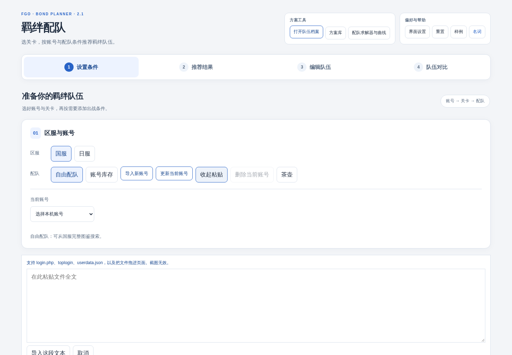
导入结果保存在当前浏览器或安装版的 localStorage。刷新或重新打开可以恢复；清除站点数据、卸载应用或系统清理会移除本机数据。长期使用请定期导出备份。
新账号会新增一套本机账号；“更新当前账号”只刷新当前选中的账号。重新导入同区服账号会替换对应区服账号，不会自动合并两个账号的库存。
茶壶
“茶壶”开关用于把茶壶倍率计入最终羁绊。茶壶在公式最后单独乘 2，适合计算活动期间的实际收益。
04选择关卡
关卡决定基础羁绊、AP、开放时间和活动加成。上方分类按钮可以快速筛选：当前限时活动、常驻 / 主线物语、自由本、主线剧情、每日任务、冠位研钻、一次通关、全部关卡。
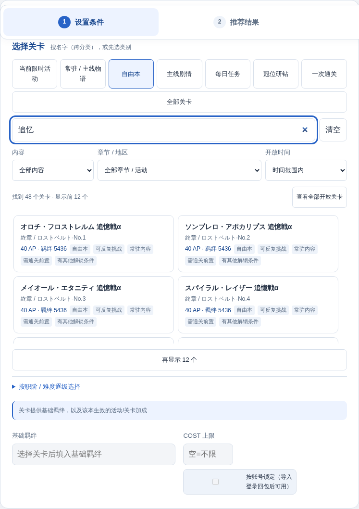
搜索与筛选
- 搜索框支持关卡名、章节、地点和羁绊值联合搜索，例如“京都 815”。
- 输入文字时会跨分类查找；清空搜索后，分类按钮重新生效。
- 日文关卡名会自动匹配简体写法，例如“追憶戦 / 終章”可以搜“追忆战 / 终章”。
- “内容”筛选周回、主线剧情和一次通关；“章节 / 地区”按活动或主线章节筛选。
- “开放时间”默认只看时间范围内；切到“含未开放 / 历史”可以查历史活动。
先切到日服，再点“自由本”或“全部关卡”，搜索“追忆”。2.1.26 及更早的安装包需要先切分类再搜索；新版网页和后续安装包可以直接跨分类搜索。
列表展示关卡本身的开放状态。关卡前置、主线进度和账号解锁条件会在选中后以标签提示，实际能否进入仍以游戏内为准。
选中关卡之后
选中后查找面板会自动收起，显示当前关卡、基础羁绊、AP、重复规则和活动加成。点“更换关卡”可以重新展开。最近六次选择按区服保存在本机，方便反复切换。
没有合适关卡时，可以直接在“基础羁绊”里手动填一个数值。COST 上限留空表示不限；填数字后，求解器会按该上限筛选队伍。
05配队规则
03 配队规则决定求解器如何在合法队伍中比较收益。默认设置适合大多数情况。
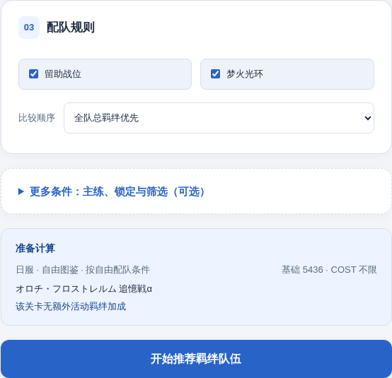
| 选项 | 作用 | 建议 |
|---|---|---|
| 留助战位 | 允许队伍使用好友助战。助战本人不拿羁绊，但会占一个位置。 | 默认开启。需要六名己方从者时关闭。 |
| 梦火光环 | 计入 15 绊从者给全队提供的羁绊加成。 | 账号有 15 绊从者时开启。 |
| 比较顺序 | “全队总羁绊优先”比较全队总和；“主练羁绊优先”先看指定主练的收益。 | 刷全队羁绊选前者；练单个从者选后者。 |
展开“更多条件：主练、锁定与筛选（可选）”可以指定主练、钉住从者或礼装、设置前后排、排除不想用的从者，以及按职阶、稀有度、活动加成等筛选。条件越多，搜索空间越小，计算通常越快。
第一次可以先不加锁定，看看上限；得到结果后，再把不想换的从者或礼装钉住重新算。这样更容易判断某个位置还有多少提升空间。
确认条件后点“开始推荐羁绊队伍”。计算过程中按钮会变成“停止计算”，随时可以停止并保留已经找到的合法队伍。
06推荐结果
结果页按羁绊分数从高到低排列。上方是“推荐队伍”分组，点一组即可查看该组的实际队伍；下方是“全部已计算”“最高分方案组”“途中其他队伍”三个视图。
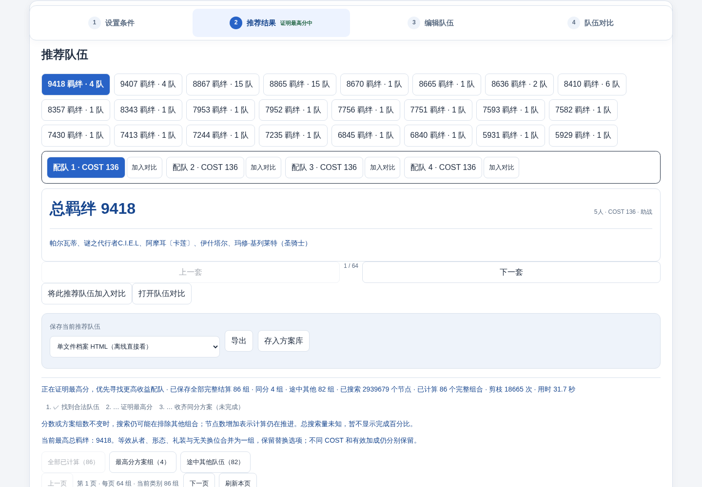
怎么看结果
- 蓝色高亮的一组是当前最高分，括号里是“队数”，表示同分或等效方案的数量。
- 队伍卡片显示总羁绊、人数、COST 和是否使用助战；成员按前排 1–3、后排 4–6 排列。
- “上一套 / 下一套”在同一组内切换队伍；“全部已计算”可以翻页查看搜索途中算过的其他合法队伍。
- “将此推荐队伍加入对比”把当前队伍放进对比页；“打开队伍对比”直接跳转。
计算状态
节点数增加表示搜索仍在推进。分数或方案组数不变时，搜索可能正在排除其他组合，这是正常现象。
导出与保存
结果页底部可以选择导出格式，然后点“导出”；也可以点“存入方案库”，把当前队伍保存为可复用方案。
| 格式 | 用途 |
|---|---|
| 单文件档案 HTML | 离线直接打开，包含队伍和结果，适合分享。 |
| 图片 PNG | 导出当前一队，适合发群或保存截图。 |
| 适合打印或归档。 | |
| Word DOCX | 可继续编辑的文档。 |
| 队伍数据 JSON | 可以在“打开队伍档案”里重新打开。 |
“导出全部已得到队伍（JSONL）”会把本次搜索已经算出的所有队伍打包，适合做备份或后续分析。
07编辑队伍
“编辑队伍”页把当前队伍拆成六个槽位。前排是 1–3，后排是 4–6；每个槽位可以选择从者、灵基和礼装，并显示该成员的最终羁绊。
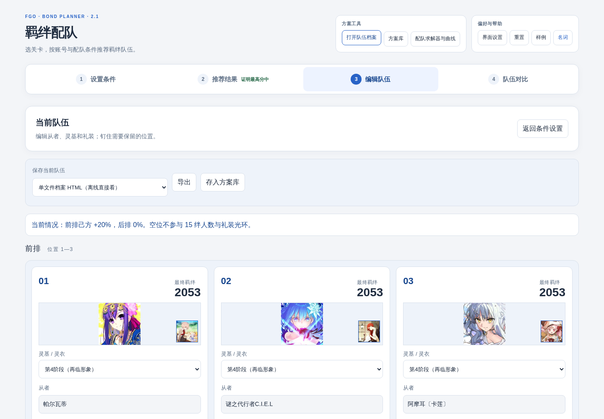
页面顶部会显示当前的前后排加成情况，例如“前排己方 +20%，后排 0%”。空位不参与 15 绊人数和礼装光环计算。编辑完成后可以“存入方案库”，或直接导出 HTML、PNG、PDF、DOCX、JSON。
08队伍对比
对比页最多并排查看多支队伍，保留每队加入时各自的关卡、条件和收益。切换当前关卡不会改写已经保存的对比结果。
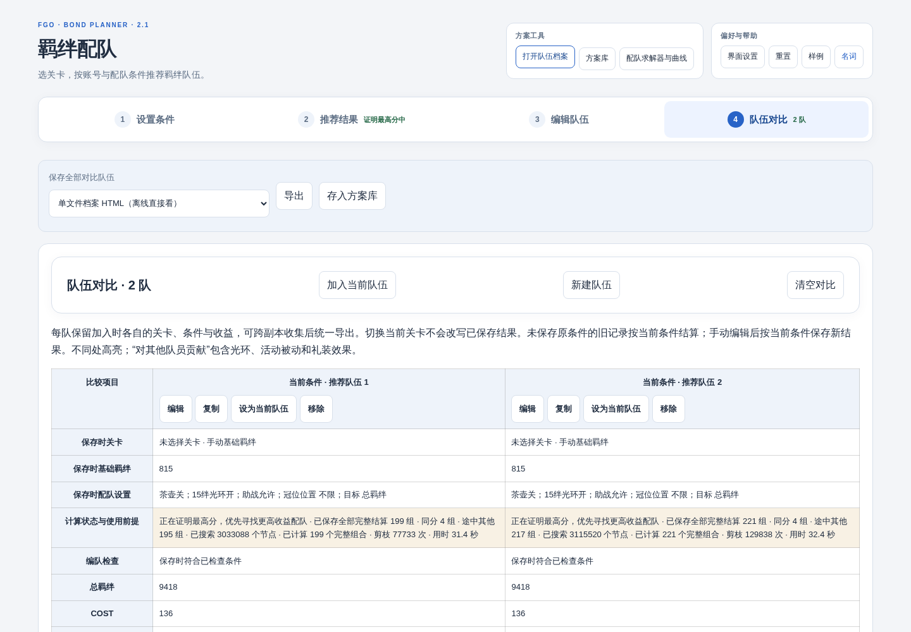
- 在结果页点“加入对比”，或在对比页点“加入当前队伍”“新建队伍”。
- 每队可以“编辑”“复制”“设为当前队伍”或“移除”。
- 表格逐项比较保存时关卡、基础羁绊、配队设置、计算状态、编队检查、总羁绊和 COST。
- “清空对比”会移除全部对比队伍；需要保留时先导出或存入方案库。
对比页支持跨副本收集队伍后统一导出。不同处会高亮；“对其他队员贡献”包含光环、活动被动和礼装效果。
09方案库与导出
方案库把本机算过的编队、候选和曲线汇总到一个地方。相同编队和相同候选内容会自动去重，自由配队和不同账号可以共用通用方案。
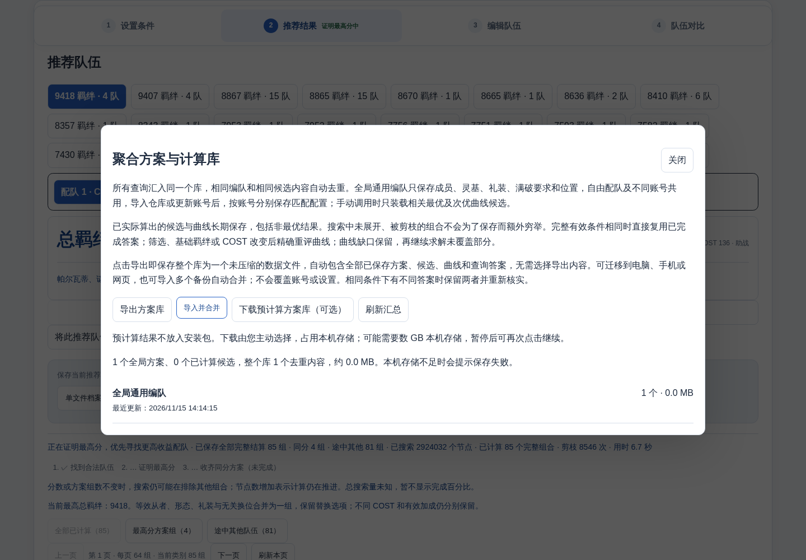
| 操作 | 说明 |
|---|---|
| 导出方案库 | 把整个库导出为一个压缩数据文件，包含全部已保存方案、候选、曲线和查询答案。 |
| 导入并合并 | 导入其他设备或旧版本的备份，自动合并并去重；校验失败时整份文件不合并。 |
| 下载预计算方案库（可选） | 由用户主动下载，占用本机存储；文件可能较大，暂停后可以继续。 |
| 刷新汇总 | 重新统计库里的方案、候选和去重内容。 |
通用方案只保存成员、灵基、礼装、满破要求和位置，不保存账号身份、库存、羁绊等级或旧收益。用其他账号调用时，会按当前库存、关卡、活动及 COST 重新核实和结算。
导出文件可以在网页、EXE 或 APK 的同一入口导入合并。只选通用方案可以迁移纯编队库；完整计算备份包含当次计算的槽位与收益，不包含登录回包。Android 单次压缩导出上限 32 MiB，Windows 256 MiB；较大的库可以分批导出再合并。
10配队求解器与曲线
“配队求解器与曲线”是独立工具，适合研究编队条件、活动分档、全部效果曲线和精确核实。主界面的账号库存与锁定条件继续由主界面求解。
这个工具优先使用本机数据更新产生的资料域和已计算结果。基础羁绊作为变量结算，因此同一个曲线可以套到不同关卡；真正落地前仍要在主界面选中关卡再算一次。
11AI 辅助
页面底部的“软件 2.1 · AI 辅助与模型更新”可以切换 AI 模式。默认“不使用 AI”，只调用精确求解器。
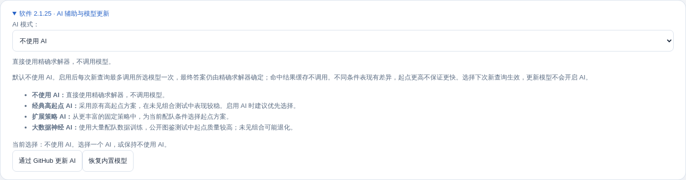
| 模式 | 特点 | 适合 |
|---|---|---|
| 不使用 AI | 直接使用精确求解器，不调用模型。 | 默认；需要完全可复现的查询。 |
| 经典高起点 AI | 采用原有高起点方案，在未见组合测试中表现较稳。 | 第一次尝试 AI 时优先选择。 |
| 扩展策略 AI | 从更丰富的固定策略中，为当前配队条件选择起点方案。 | 条件复杂、想让搜索更快进入高分区。 |
| 大数据神经 AI | 使用大量配队数据训练，公开图鉴测试中起点质量较高。 | 自由配队、追求更快的首次命中。 |
AI 只影响搜索起点，最终答案仍由精确求解器确定。每次新查询最多调用一次模型；命中结果缓存不调用。选择保存在本机，下次新查询生效。模型更新不会开启 AI。
12手机使用
手机端采用单列布局：条件区从上到下排列，顶部工具栏折叠成两行按钮，四个工作页签保持可见。
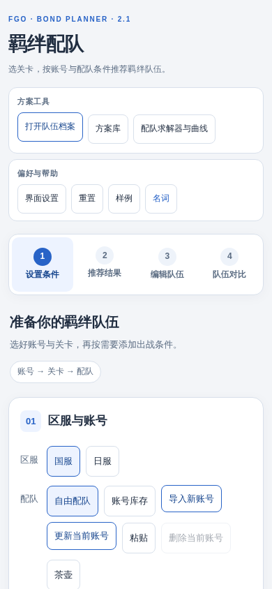
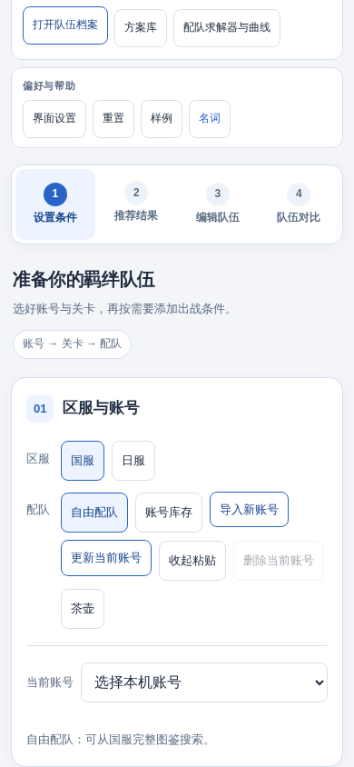
窄屏下“主练、锁定与筛选”默认收起，已经指定的项目会显示提示。推荐按钮固定在页面底部，滚动到任何位置都可以开始计算。横向空间不足时，结果卡片和对比表会改为纵向排列。
13常见问题
日服找不到追忆战怎么办？
先确认右上角区服是“日服”。追憶戦属于“自由本”，可以在“自由本”或“全部关卡”里搜索“追忆”。日文名写作“追憶戦 / 終章”，新版会自动匹配简体“追忆战 / 终章”。
2.1.26 及更早的安装包搜索仍受当前分类限制：先点“自由本”或“全部关卡”，再输入“追憶”。
为什么计算要很久？
精确求解器要比较从者、灵基、礼装、前后排和助战位置。自由配队不加限制时，搜索空间最大。可以先加锁定、排除或 COST 上限，缩小范围后再放开。
看到“找到合法队伍”就可以先查看结果；“证明最高分”和“收齐同分方案”需要更长时间，可以随时停止并保留已找到的队伍。
账号模式为什么只显示部分从者？
账号模式只显示导入库存里实际持有的从者和礼装。想用完整图鉴，切到“自由配队”。两种模式共用同一套求解器和关卡数据。
导入账号失败怎么办？
确认文件是 userdata.json、login.php 或 toplogin 的完整文本。截图无法识别；国服 / 台服正文需要是 URL 解码后的 Base64，日服 / 美服是 JSON。
也可以点“粘贴”，把文件全文贴进文本框再导入。仍然失败时，先用“打开队伍档案”确认文件类型没有选错。
结果会自动保存吗？
当前条件、账号和最近选择保存在本机，刷新或重新打开可以恢复。完整查询结果、曲线和方案库需要主动保存或导出。清除站点数据、卸载应用或系统清理会移除本机数据。
长期保存请用“方案库 → 导出方案库”，或结果页导出 HTML / JSON。不同设备之间通过备份文件迁移，不自动联网同步。
国服和日服的数据可以混用吗？
不可以。两服使用独立的从者、礼装、灵基、技能、活动和关卡快照；同 ID 的强化与实装差异也按区服处理。切服会清空当前队伍与关卡，并恢复对应账号和偏好。日服快照不可用时，不会用国服数据补齐。
数据多久更新一次？
公开演示站由 GitHub Actions 每 6 小时拉取一次 Atlas 国服和日服快照。更新后刷新页面即可。安装版需要更新安装包或走软件内的模型 / 数据更新入口。
附羁绊公式速查
- 己方前排 +20%；助战占前排时，己方全体再叠 +4%（前排 24%，后排 4%）。
- 助战在后排时，第一层不加这 4%。
- 礼装、午餐 / 午茶 / 福尔摩斯、活动被动、15 绊在第二层加算后乘。
- 茶壶在最后单独乘 2。助战本人不拿羁绊。
游戏数据来自 Atlas Academy 公开接口；本工具为非官方配队辅助，与游戏运营方无关。截图取自实际运行界面，实际界面会随版本和数据结构更新。本手册随软件一起发布，可在“说明书”入口在线阅读或下载 PDF。